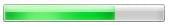

The <progress> HTML element displays an indicator showing the completion progress of a task, typically displayed as a progress bar.
| Content categories | Flow content, phrasing content, labelable content, palpable content. |
|---|---|
| Permitted content | Phrasing content, but there must be no <progress> element among its descendants. |
| Tag omission | {{no_tag_omission}} |
| Permitted parents | Any element that accepts phrasing content. |
| Implicit ARIA role | {{ARIARole("progressbar")}} |
| Permitted ARIA roles | No role permitted |
| DOM interface | {{domxref("HTMLProgressElement")}} |
This element includes the global attributes.
progress element requires. The max attribute, if present, must have a value greater than 0 and be a valid floating point number. The default value is 1.0 and max, or between 0 and 1 if max is omitted. If there is no value attribute, the progress bar is indeterminate; this indicates that an activity is ongoing with no indication of how long it is expected to take.Note: Unlike the {{htmlelement("meter")}} element, the minimum value is always 0, and the min attribute is not allowed for the <progress> element.
Note: The {{cssxref(":indeterminate")}} pseudo-class can be used to match against indeterminate progress bars. To change the progress bar to indeterminate after giving it a value you must remove the value attribute with {{domxref("Element.removeAttribute", "element.removeAttribute('value')")}}.
<progress value="70" max="100">70 %</progress>
{{ EmbedLiveSample("Examples", 200, 50) }}
On Windows 7, the resulting progress looks like this:

{{Specifications}}
{{Compat}}